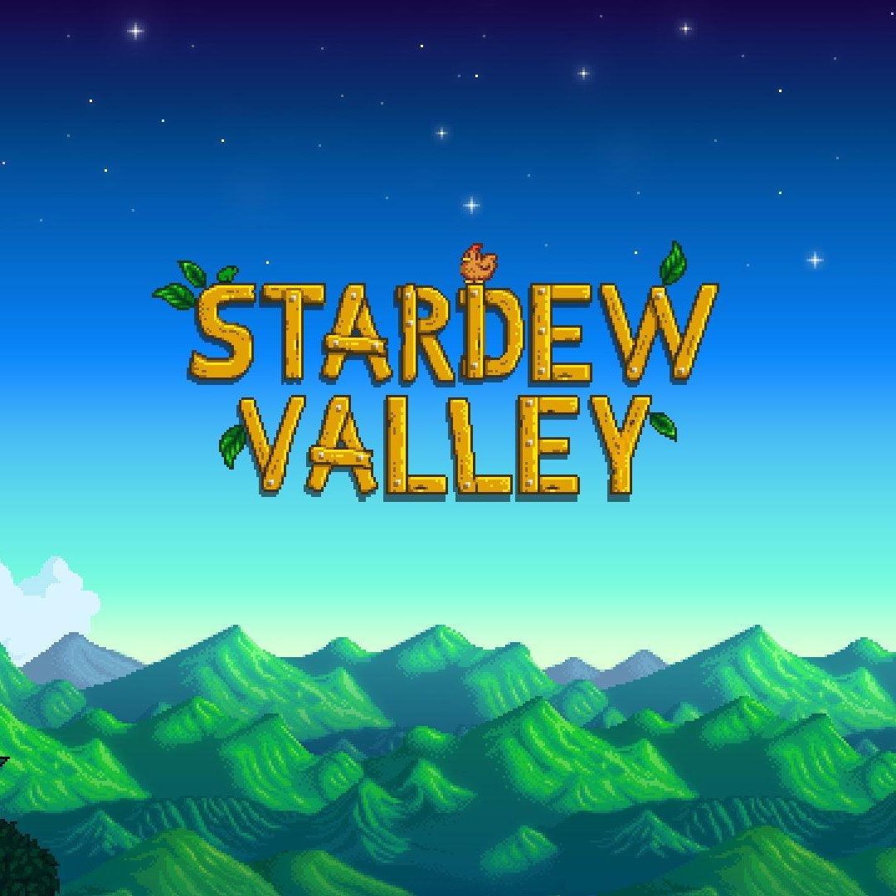
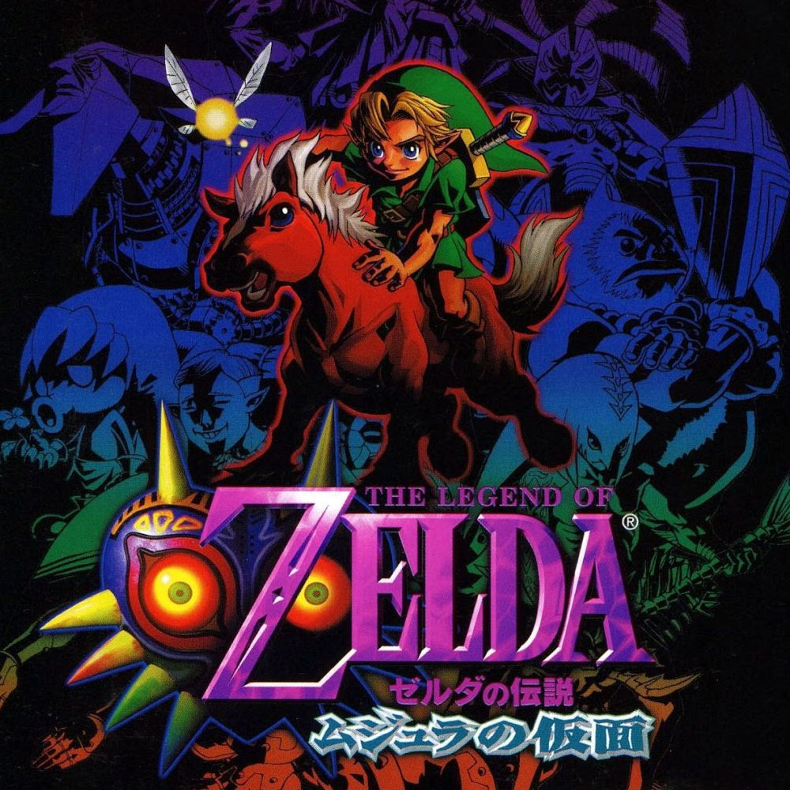
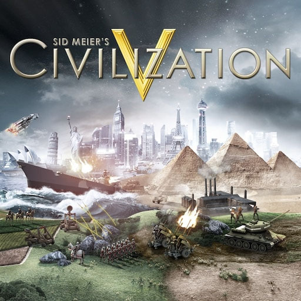

Video games that I enjoy
The current video game landscape is dominated by games that are trying to be more and more like movies: Engaging stories, developed characters, grandiose ambient soundtracks, absurdly advanced graphics. These kinds of games have never really interested me. I like retro games and games that maintain the oldschool elements of challenge, catchy melodies, and fun gameplay. Most importantly that last part — above all I am a fan of games that are fun to play. Here are three of my favorites.
Stardew Valley
Stardew Valley takes everything I loved about Harvest Moon growing up and makes it even better. It's got a memorable soundtrack that doesn't ever get tiring, the sprite artwork is gorgeous, the characters all have (for the most part) distinct personalities and there are all sorts of events that make the daily grind more interesting. There's a lot of room for improvement in the game — I'd love to see more characters, locations, progression, and other additions — but it's a really strong foundation of a game that's fun to play, and that's what matters.
The Legend Of Zelda: Majora's Mask
When I was around five years old I got a Nintendo GameCube for Christmas from an uncle of mine, and it came with The Legend of Zelda Collector's Edition, which had Zelda, Zelda II, Ocarina of Time, and Majora's Mask. I spent the most time playing Ocarina of Time but as I got older I came to appreciate the unconventional and creative basis for the gameplay in Majora's Mask: A 72-hour clock that was always ticking down. It has a uniquely "dark" style compared to some other Zelda games, its dungeons are some of the best in the series, it's full of (mostly) interesting side-quests, and generally is still a game unlike any other.
Sid Meier's Civilization V
Civ V is infamously addictive and when I first got my hands on it, I could not put it down. There's a lot of different mechanics to learn and it can be really confusing at first but it's a joy to play and once you get the hang of it, it's extremely fun to strategize and make early-game decisions with long-term payoff and try to think your way out of a tough scenario. There are other games similar to it out there that I haven't yet tried, and I'd like to, but I'm always just so happy to play another game of Civ V.